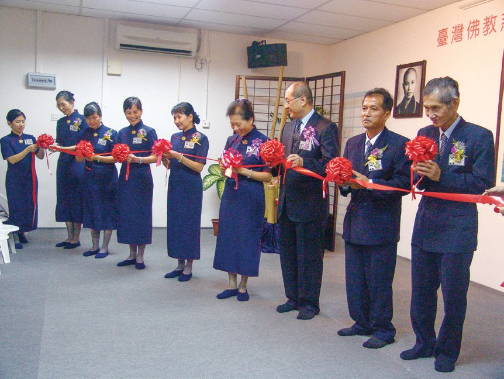
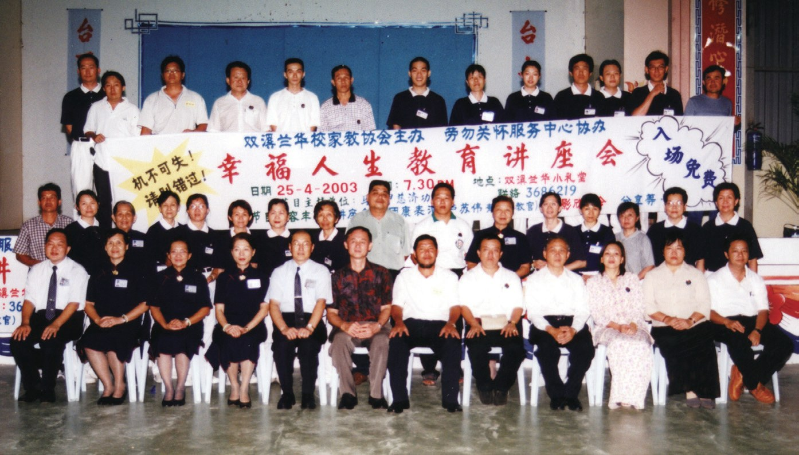
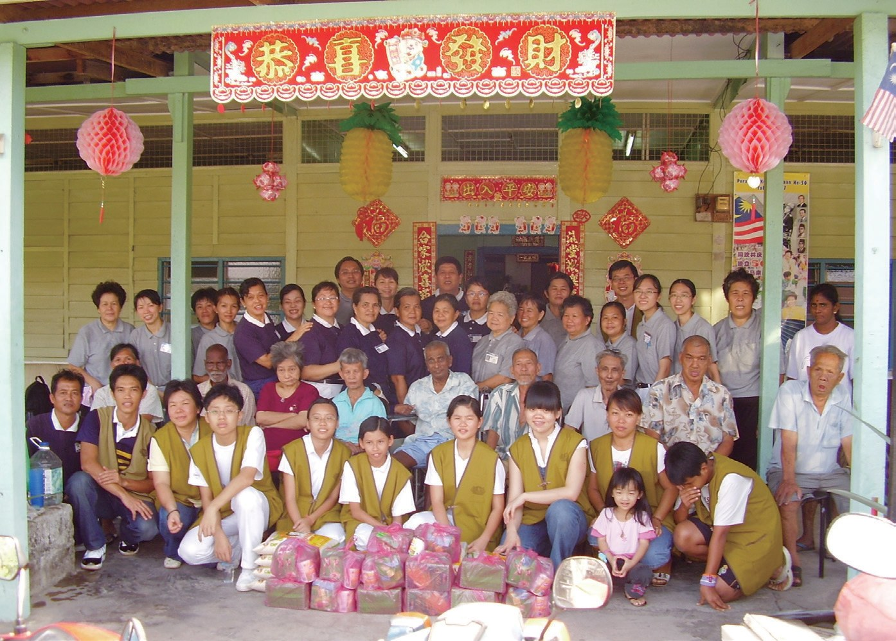
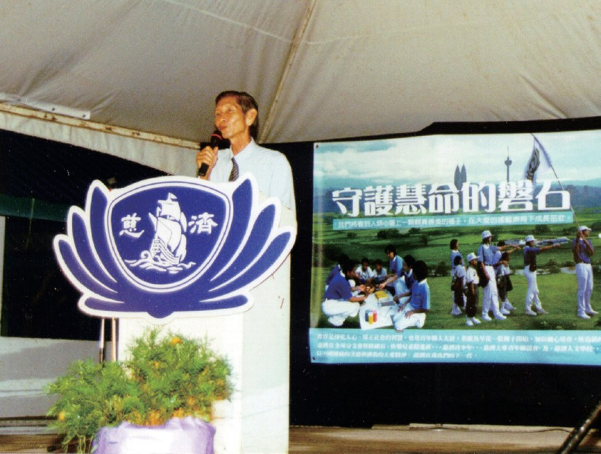
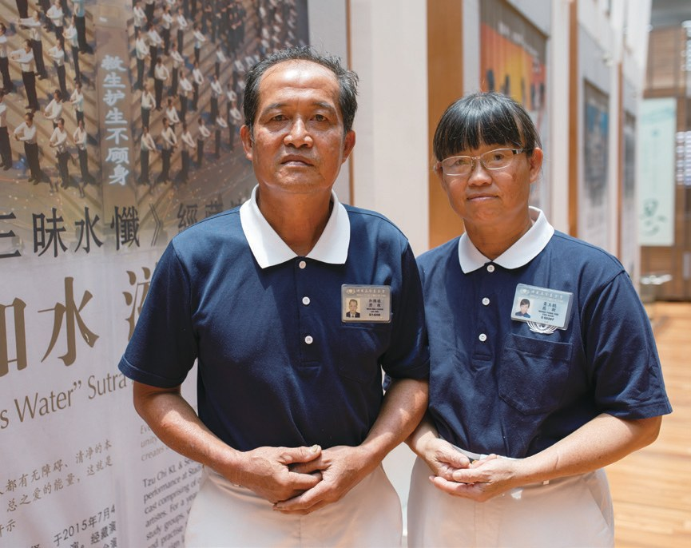
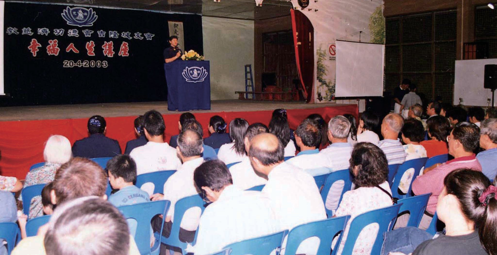
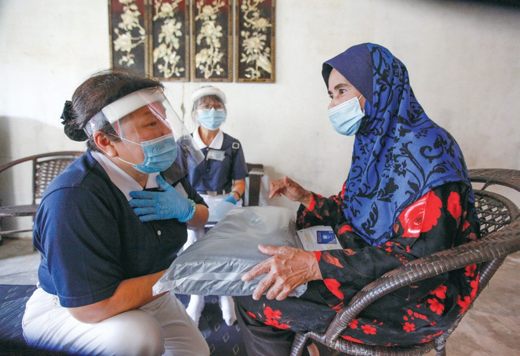

勞勿聯絡處
「勞」動身心，「勿」忘精進——一個地名，怎樣變成祝福？

先別急著下結論，讀完再說說你的想法～
這一篇講勞勿聯絡處：一位只懂務農的彭亨人，把慈濟帶回自己的家鄉。
你會讀到來回七小時的共修路、放棄畢業旅行的女孩、凌晨三點半撿回收的割膠工人，還有一對越忙越開心的夫妻。
下面是原書的節錄，紅色底線是我們替你標出的轉折點。
讀之前：一位只會務農、從沒想過當志工的人，能帶動多少人？
從無到有
早期，勞勿志工每個月都要到外地共修。閱讀引導
猜一猜閱讀引導
早期勞勿志工每個月都要帶領志工到吉隆坡支會共修。來回車程要多久？
如果要前往馬六甲分會，則得在深夜出發，才能在早晨抵達。

早上才到……
在獲得馬六甲分會同意後，勞勿志工積極尋覓合適的地點，最後租下一間位在勞勿市立卑路商業中心的店面，2005年10月8日勞勿共修處正式啟用，並舉辦首次共修會。

馬六甲分會執行長劉濟雨祝福勞勿志工：期盼大家好好經營，以「勞」動身心，「勿」忘精進。

變成了祝福！
- 兩百多位志工p.786–787
- 七千多位會員p.787
第一個個案和第一場大火
一位單親媽媽，和她懂事的女兒。閱讀引導
陳鳳珍是一位患有肌肉萎縮症的單親媽媽，她原先在吉隆坡擔任女傭，患病後回到文冬與女兒、弟弟同住。
陳鳳珍全身僅頸部以上可以活動，生活起居全仰賴十歲的女兒，經訪視評估後，決議每個月補助300令吉。
要照顧媽媽……
陳鳳珍就讀國中的女兒相當乖巧懂事，不但承擔起照顧母親的工作，還考量家中經濟狀況，放棄參加畢業旅行。志工在得知這件事情後，決定替她募集旅費，讓她能留下美好的回憶。

還想到她的回憶！

勞勿聯絡處負責人和維禎當晚即帶領志工前往關懷，並緊急發放物資以解災民燃眉之急，並於翌日進行勘災。
這是勞勿聯絡處成立以來，面對的首場大型災難，志工擔心無法勝任救災及發放工作，希望吉隆坡分會能安排資深志工前來支援。
會不會怕做不好？
執行長簡慈露表達對當地志工充滿信心，勞勿志工過去多次參與勘災及急難發放經驗，有能力可以承擔。
對的事，做就對了
沒有照護人員的板屋安老院。閱讀引導
新巴力安老院是一棟獨立式單層板屋，有13名院友，雖然老人們每月可獲得政府補貼100令吉，但院內沒有聘僱照護的人員，只有當地的獅子會不定時前往打掃環境。

「雖然因為清理環境而弄髒了衣服，但卻沒有疲憊的感覺，反而因為環境被清潔乾淨，及看到院友臉上的笑容而法喜充滿，心中的喜悅難以形容。就如上人所說的『對的事，做就對了！』」
志工郭雅栽表示・p.791
心裡卻很歡喜！
2020年因受新型冠狀病毒疫情影響，數月無法前往安老院服務，但關懷的心不變。在年底疫情稍緩的冬至時節，也特地送上湯圓及炒米粉至安老院，讓院友們能夠享受節日氣氛。
猜一猜閱讀引導
2021年5月15日起，勞勿志工為居家隔離者和獨居長者送免費素食便當。到5月21日，一共送出多少份？
在新村推環保
務農的村子，和一位割膠工人。閱讀引導
雙溪蘭新村的人口約六千人，村民以務農為生，民風純樸。「慈濟」跟「環保觀念」，對當地居民而言都相當陌生。
2003年12月6日，志工在雙溪蘭民眾禮堂舉辦慈濟志業展覽，並播放證嚴上人開示及環保志工的心得分享影片，受到村民熱烈的迴響，相當讚歎「垃圾變黃金，黃金變愛心」的環保理念。

新邦榴蓮志工張莫德從事割膠業，……
他每天凌晨三點半就早起撿拾環保資源，也會在週末夜市收攤後，收拾民眾及攤販丟棄的回收物，收集起來拿到環保站，讓二手物能再次利用。
天都還沒亮！
「別人能做環保，我也做得到，用雙手打造內心的清淨，有時間就做環保，身體力行為善最樂。」
張莫德認為・p.797- 12個環保點p.797
- 7個環保站p.797
越忙越開心
勞勿的第一顆種子，和他的太太。閱讀引導
和維禎（濟維）是勞勿的第一顆慈濟種子。
直到2003年4月，慈濟在當地學校舉辦幸福人生講座，看到馬六甲、吉隆坡的志工協力統籌整場活動，他才恍然必須有更多人一同來付出，才能轉動善的漣漪。

要大家一起來！
面對這一疊會員表格，和維禎唯有硬著頭皮，和太太一起去收每月的善款。不善於和人打交道的他，逢人講慈濟、收善款，從一言難說到侃侃而談。

「以前，人生的目標是如何賺多一點錢，買多一些芭場，種多一點水果。但現在的人生目標卻是如何帶動志工、會員、村民到馬六甲靜思堂、吉隆坡支會、巴生義診中心去參訪，讓更多的人認識慈濟，……」
和維禎笑言・p.799到多帶動人！
「不知為什麼，現在越忙越開心，有時辦活動、做環保，我就很歡喜，什麼疲累都忘了！……我們有能力幫助別人，就是有福之人！」
黃玉懿說・p.800停一停：誰讓你記住了？閱讀引導
選一位你印象最深的人。沒有標準答案。
有人把家鄉帶進慈濟，有女孩為了家中經濟放棄畢業旅行，有人凌晨三點半撿回收，有人越忙越開心。哪一位讓你最有感覺？

一起回頭看看吧～
回望
依本章原文整理，每一條都標了原書頁碼。閱讀引導
背後原因
勞勿怎樣有了共修處

小川為什麼勞勿志工一定要在當地找共修的地方？

路途遙遠去吉隆坡共修來回七個多小時。p.786
- 人越來越多
志工與會員人數增加。p.786
- 共修處啟用
2005年勞勿共修處正式啟用。p.786
後續發展
勞勿一路走來

小禾從第一場講座到文達水災發放，經過了多少年？
- 2003.4.20
舉辦幸福人生教育講座。p.788
- 2003.12.7
雙溪蘭第一次環保回收。p.795
- 2005.10.8
勞勿共修處正式啟用。p.786
- 2007.9.2
首次關懷新巴力安老院。p.790
- 2012.9.9
第一個環保站在新邦榴蓮啟用。p.797
- 2021.1
文達水災勘災、發放。p.793–794

和維禎的轉變
以前和後來
小川做慈濟以後，和維禎有什麼不同？
- 只填自己和太太的會員表格幾個新村募得千名會員p.798–799
- 不善於和人打交道逢人講慈濟p.798
- 想多賺錢、多買芭場想讓更多人認識慈濟p.799
以上只整理本章寫到的事；書裡沒寫到的，我們不替它下結論。
回頭看讀前的選擇閱讀引導
和維禎原本只填了自己和太太兩張會員表格（p.798）；後來在勞勿的幾個新村已募得千名會員（p.799）。不善言辭的人，也能一步一步帶動整片家鄉。
後來有沒有也成為志工？
只有你自己看得到喔！
準備好了就一起出發～